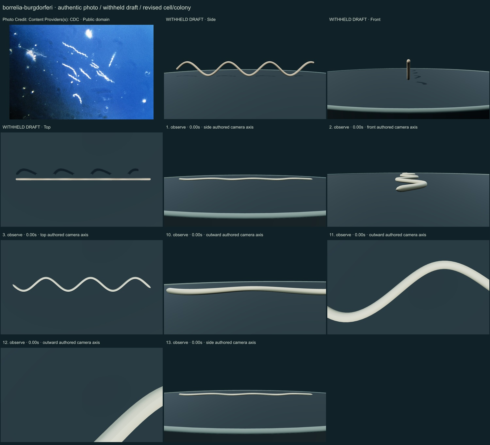
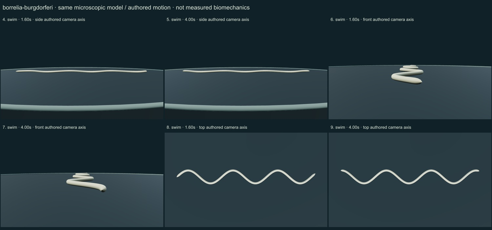

PhenoVoxel Archive · v0.6.26 · October25,2026
300 records after verified publication; all50 original held drafts have initial corrections, including all46 in the renewed foreground request.250 additional species remain to550. Release register.
Photo Credit: Content Providers(s): CDC · Public domain. CDC darkfield micrograph,400×, under the historical Borrelia burgdorferi name. Bright cells and blue background are imaging contrast; flat-wave structure follows separate primary evidence. The sensu-stricto species is not counted separately from the Borreliella homotypic combination. Resized inside 1000 px, flattened and JPEG encoded; no generative alteration.
Exact source/download/derivative checksums and crop regions are preserved in the linked data. Tabellaria crops contain only panelg; Rhodospirillum contains only Figure1a and retains strain labels/scale. No other copyrighted reference figures are redistributed. Source photographs are authentic, with no generated organisms.
A continuous slender rounded envelope follows a planar flat-wave centerline. It has no exposed polar flagella; internal periplasmic ribbons are discussed as mechanism, not reconstructed molecular anatomy.
A slender continuous neutral envelope carries a planar wave. Source darkfield halos/blue background are retained only in the authentic micrograph and are not treated as living pigment or surface texture.
Remaining: The envelope remains smooth and uniform, rounded tip transitions are idealized, and close views can clip a partial wave. Internal periplasmic ribbons, outer membrane ultrastructure and motors are not reconstructed. Waveform, body roll, forces, optical appearance and speed are unmeasured; this is not a physiological or pathogenic-process simulation.
An authored traveling planar wave deforms the same envelope, with a small unmeasured excursion. No internal motor/filament ribbon solver, propulsion forces, host interaction, rotation measurement or calibrated speed.
Partly stylized, unmeasured educational reconstructions. Silica/envelope optics, fine ultrastructure, proportions and motion timing remain approximate. No independent specialist validation, accuracy percentage, measured biomechanics, physiological solver or simulated microscopy. Source preparation and taxonomic opinions are explicit.
13 actual final nonblank main-viewer states individually inspected on two labelled sheets: authentic micrograph, withheld draft, whole-model side/front/top, six representative motion states, three partial detail views and Observe reset.


Partly stylized, unmeasured educational reconstructions. Silica/envelope optics, fine ultrastructure, proportions and motion timing remain approximate. No independent specialist validation, accuracy percentage, measured biomechanics, physiological solver or simulated microscopy. Source preparation and taxonomic opinions are explicit. Prior293 species objects and credited wolf/tiger meshes remain unchanged. Recorded occurrences are not native ranges; two unresolved name/aggregator associations are withheld. Protista/Monera are legacy reporting conveniences, Bacteria and Archaea separate domains.
Original geometry/controller MIT. Authentic photo portions retain their credited license. Model-only frames are original rendered geometry.
Exact findings, source scopes, screenshot and photo hashes_lores.jpg){kind=link}